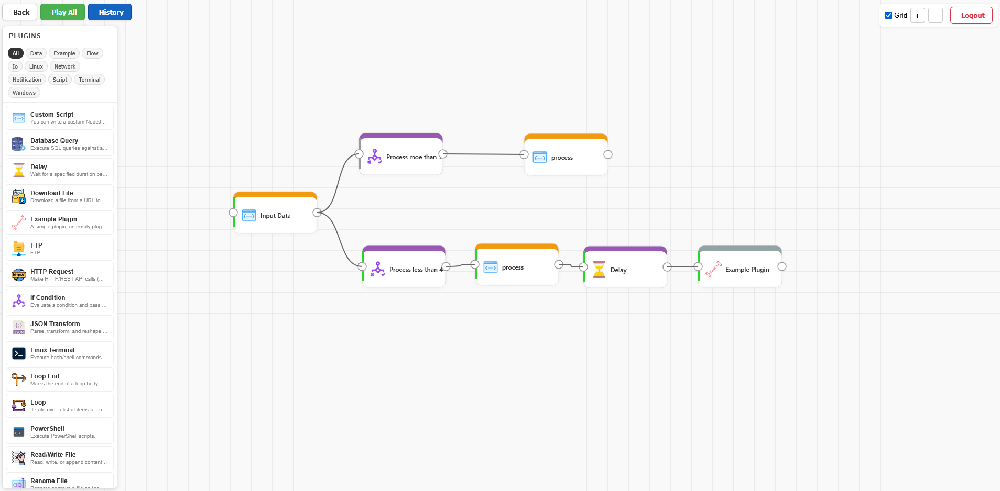

Node Connector
A visual workflow automation platform. Build chains of executable plugins, trigger them via cron, webhook, or terminal, and monitor execution in real-time.
This project started from a single script file that automated repetitive tasks — manual deployments, server health checks, file operations — because I had no access to tools like n8n or a proper CI/CD pipeline. Over time that script grew too large to maintain, so I took inspiration from n8n and rebuilt it as a visual node-based editor. Node Connector is a personal project; while the codebase has been hardened with production-grade security practices, it was built for personal use and is not intended as a production platform.

Overview
Node Connector lets you create visual workflows by connecting plugin nodes on a canvas. Each node represents an action (run a script, SSH into a server, upload via FTP, rename files, etc.). Nodes pass data from one to the next, forming an execution chain.
Key Features
- Visual drag-and-drop node editor with SVG canvas
- Extensible plugin architecture — add plugins by dropping a JS file
- Three trigger modes: Cron (scheduled), Webhook (HTTP), Terminal (manual)
- Real-time execution monitoring via Server-Sent Events (SSE)
- Per-sheet scheduling with node-cron
- Multi-user authentication with JWT
- Single Docker image deployment (Nginx + API + Scheduler)
Architecture
Project Structure
Local Setup (no Docker)
Run Node Connector directly on your machine for full access to host tools (Python, CMD, bash, and any installed program). This is the recommended approach when you need terminal plugins to interact with your system.
Prerequisites
- Node.js 18+ installed on your machine
One-Command Start
# Windows — double-click start.bat or run:
start.bat
# Linux / macOS
./start.sh
# Or directly (any platform)
node start.jsThe start.js launcher automatically:
- Installs dependencies for API, frontend, and scheduler (if
node_modules/is missing) - Builds the frontend (if
front/build/doesn't exist) - Writes
config.jspointing the frontend to the API - Starts the API server (which also serves the frontend static files)
- Starts the scheduler (after a 3-second delay for API readiness)
http://localhost:3001 in your browser once all services are running. Press Ctrl+C in the terminal to stop everything.
How It Works
Without Docker, there is no Nginx. Instead, the Express API serves double duty — it handles both API routes (/auth, /sheet) and the frontend static files from front/build/. Everything runs on a single port.
Environment Variables
Set these before running start.js, or use the defaults:
| Variable | Default | Description |
|---|---|---|
PORT | 3001 | HTTP port for API + frontend |
JWT_SECRET | random per session | JWT signing secret (required in production) |
REFRESH_TOKEN_SECRET | random per session | Refresh token secret (required in production) |
INTERNAL_API_KEY | random per session | Scheduler/CLI to API key (required in production) |
ENCRYPTION_KEY | random per session | AES-256 encryption key for secret params (required in production) |
CORS_ORIGIN | http://localhost:PORT | Allowed CORS origin (set to your domain in production) |
DATA_DIR | /data | Base directory for file-operation plugins (path traversal sandbox) |
Rebuilding the Frontend
The frontend is only built once. To rebuild after frontend code changes:
# Delete the build folder and restart
rm -rf front/build
node start.jsAuto-Start on Boot
To have Node Connector start automatically when the system boots, use the provided service scripts. They require elevated privileges.
Windows (Task Scheduler)
# Install — run as Administrator
service-install.bat
# Uninstall — run as Administrator
service-uninstall.batThis creates a Windows Task Scheduler task named NodeConnector that runs node start.js at system startup under the SYSTEM account. To start immediately without rebooting:
schtasks /run /tn "NodeConnector"Linux (systemd)
# Install
sudo ./service-install.sh
# Uninstall
sudo ./service-uninstall.shThis creates a systemd service named node-connector that starts on boot with automatic restart on failure. Useful commands:
sudo systemctl status node-connector # Check status
sudo systemctl stop node-connector # Stop service
sudo systemctl restart node-connector # Restart service
sudo journalctl -u node-connector -f # View logsDocker Deployment
Build & Run
docker build -t node-connector .
docker run -d -p 80:80 node-connectorWith Required Secrets
All secret environment variables are required in production. The container will exit on startup if any are missing.
docker run -d -p 80:80 \
-e JWT_SECRET=$(openssl rand -hex 32) \
-e REFRESH_TOKEN_SECRET=$(openssl rand -hex 32) \
-e INTERNAL_API_KEY=$(openssl rand -hex 32) \
-e ENCRYPTION_KEY=$(openssl rand -hex 32) \
node-connectorWith Host Volume (for file operations)
# Linux / macOS
docker run -d -p 80:80 -v /path/on/host:/data node-connector
# Windows
docker run -d -p 80:80 -v C:\Users\You\Desktop:/data node-connector/data. Mount your host directory there so scripts can read/write host files.
Windows Quick Script (run.bat)
@echo off
REM Stops existing containers, rebuilds, and starts fresh
for /f "tokens=*" %%i in ('docker ps -q --filter "ancestor=node-connector"') do docker stop %%i
for /f "tokens=*" %%i in ('docker ps -aq --filter "ancestor=node-connector"') do docker rm %%i
docker build -t node-connector .
docker run -d -p 80:80 --name node-connector node-connectorContainer Services
| Service | Port | Description |
|---|---|---|
| Nginx | 80 | Serves frontend, proxies /api/ to API |
| API | 3001 (internal) | Express.js REST API |
| Scheduler | - | Cron job manager, syncs every 30s |
Authentication
The API uses JWT-based authentication with httpOnly cookies. Access tokens expire in 15 minutes and are automatically refreshed using a refresh token cookie (7-day expiry). Tokens are never exposed to JavaScript, preventing XSS-based token theft.
{ "username": "...", "password": "..." }201 — { "message": "User created" }{ "username": "...", "password": "..." }200 — { "message": "Login successful" }token— httpOnly, secure (production), sameSite=strict, 15 min expiryrefreshToken— httpOnly, secure (production), sameSite=strict, path=/auth/refresh-token, 7 day expiry
refreshToken cookie (sent automatically)200 — { "message": "Token refreshed" } (new token cookie set)token cookie200 — { "message": "Logged out" }token cookie200 — { "valid": true }token cookie200 — User object (without password)Authentication Method
| Method | Used By | Description |
|---|---|---|
token cookie (httpOnly) | Frontend | JWT access token, sent automatically with every request |
refreshToken cookie (httpOnly) | Frontend | Refresh token, scoped to /auth/refresh-token path only |
X-Internal-Key: <key> | Scheduler, CLI | Internal API key for service-to-service calls |
Sheets
A sheet is a workflow definition containing a graph of connected nodes. Sheet metadata is stored in SQLite; node data is stored as JSON files.
{ id, name, uid, slug, is_active, trigger_type, cron_schedule }{ "name": "My Workflow" }{ uid, name, slug, data: { nodes: [] } }{ "sheet": { "uid": "...", "name": "...", "data": { "nodes": [...] } } }Nodes
Nodes are the building blocks of a workflow. Each node uses a plugin and has configurable parameters, inputs (from upstream nodes), and outputs (to downstream nodes).
Node Structure
{
"id": "uuid",
"title": "Node Title",
"className": "CustomScript", // Plugin class name
"position": { "x": 100, "y": 200 },
"params": {
"0": { "name": "Script", "alias": "script", "type": "big_string", "default": "...", "value": "..." }
},
"inputs": ["node-id-1"], // IDs of upstream nodes
"outputs": ["node-id-2"] // IDs of downstream nodes
}{ "sheetId": "...", "title": "...", "pluginId": "CustomScript", "position": {x, y}, "params": {} }{ "id": "new-node-uuid", "message": "created" }{ "sheetId": "...", "node": { "id": "...", ... } }{ "sheetId": "...", "node": { "id": "..." } }Execution
Single Node (Interactive)
token query param (required for SSE)text/event-stream with progress eventsSSE events have this shape:
{
"id": "node-uuid",
"result": { ... }, // Plugin output (after execution)
"error": false,
"message": "Done",
"stage": "executed" // "executing" | "executed"
}Batch (All Root Nodes)
X-Internal-Key{ "sheetUid": "..." }// Response
{
"sheetUid": "...",
"sheetName": "My Workflow",
"results": [
{
"rootNodeId": "...",
"rootNodeTitle": "Start",
"status": "success",
"nodes": [
{ "nodeId": "...", "title": "Custom Script", "result": { ... } }
]
}
]
}Webhook Trigger
trigger_type: "webhook".X-Internal-KeySettings & Triggers
{ "uid": "...", "name": "...", "is_active": 1, "trigger_type": "cron", "cron_schedule": "*/5 * * * *" }Trigger Types
| Type | Value | How It Works |
|---|---|---|
| Cron | "cron" |
Scheduler automatically executes the sheet on the configured schedule. The cron_schedule field defines timing. |
| Webhook | "webhook" |
Sheet is executed when an HTTP POST is sent to /sheet/webhook/{uid}. |
| Terminal | "terminal" |
Sheet is executed manually via the CLI tool or from the UI's execute button. |
Cron Schedule Options
| Label | Expression |
|---|---|
| Every 15 seconds | */15 * * * * * |
| Every 30 seconds | */30 * * * * * |
| Every minute | * * * * * |
| Every 3 minutes | */3 * * * * |
| Every 5 minutes | */5 * * * * |
| Every 15 minutes | */15 * * * * |
| Every 30 minutes | */30 * * * * |
| Every 45 minutes | */45 * * * * |
| Every hour | 0 * * * * |
| Daily at 6 AM | 0 6 * * * |
| Daily at 9 AM | 0 9 * * * |
| Daily at 12 PM | 0 12 * * * |
| Daily at 3 PM | 0 15 * * * |
| Daily at 6 PM | 0 18 * * * |
Plugin System
Plugins are auto-discovered from the api/plugins/ directory. Any .js file exporting a class that extends Plugin is loaded automatically.
Base Plugin Class
const Plugin = require("./../src/models/plugin");
class MyPlugin extends Plugin {
name() { return "My Plugin"; }
description() { return "What this plugin does"; }
icon() { return "🔧"; }
iconBase64() { return null; } // Optional: return "data:image/png;base64,..." for a custom image icon
tags() { return ["category"]; }
paramsDefinition() {
return [
{
name: "Param Name", // Display label
alias: "param_alias", // Key in params object
type: "string", // "string" | "big_string" | "number" | "boolean" | "select" | "radio"
secret: false, // true = rendered as password field, encrypted at rest
default: "default value",
value: undefined
}
];
}
async logic(params = {}) {
// params.param_alias = this node's configured value
// params.input = output from upstream nodes
return {
status: { error: false, message: "Success" },
output: { key: "value" } // Passed to downstream nodes
};
}
}
module.exports = MyPlugin;Plugin Icons
Plugins support two icon modes:
- Emoji (default) — Return an emoji string from
icon(). Rendered as SVG<text>on the canvas and<span>in the palette. - Base64 image — Override
iconBase64()to return a data URI (e.g.,"data:image/png;base64,..."). Rendered as SVG<image>on the canvas and<img>in the palette. The emoji icon serves as a fallback ificonBase64()returnsnull.
Parameter Types
| Type | UI Rendered As |
|---|---|
string | Single-line text input |
big_string | Multi-line textarea (code editor) |
number | Numeric input |
boolean | Checkbox |
select | Dropdown menu. Requires options array: [{label, value}, ...] |
radio | Radio button group. Requires options array: [{label, value}, ...] |
Secret Parameters
Add secret: true to any parameter definition to mark it as sensitive. Secret parameters are:
- Rendered as password fields (masked input) in the node editor
- Encrypted at rest using AES-256-GCM before saving to disk
- Automatically decrypted when the node is loaded for editing or execution
{ name: "Password", alias: "password", type: "string", secret: true, default: "", value: undefined }Return Format
Every plugin's logic() must return:
{
status: {
error: boolean, // true if execution failed
message: string // Human-readable status message
},
output: { ... } // Data passed to downstream nodes via params.input
}Available Plugins
async function main().| Parameter | Type | Default | Description |
|---|---|---|---|
script | big_string | Template code | JavaScript code with async function main() |
working_directory | string | /data | Working directory for script execution (CWD) |
Built-in Helpers
| Name | Type | Description |
|---|---|---|
input | Object | Output from the previous node, injected as a variable. Access keys directly: input.filepath |
output(data) | Function | Pass structured data to the next node. Equivalent to console.log(JSON.stringify(data)) |
Example
async function main() {
const fs = require('fs');
// Access data from the previous node
console.log("Received:", input);
// Read files from mounted volume
const files = fs.readdirSync('.');
// Pass structured data to the next node
output({ files, count: files.length });
}| Parameter | Type | Description |
|---|---|---|
ssh_host | string | Server hostname or IP |
ssh_username | string | SSH username |
ssh_password | string secret | SSH password (encrypted at rest) |
ssh_cmd | string | Commands to run (comma-separated for multiple) |
| Parameter | Type | Description |
|---|---|---|
host | string | FTP server hostname |
username | string | FTP username |
password | string secret | FTP password (encrypted at rest) |
local_file_path | string | Path to local file to upload |
remote_folder_path | string | Remote destination folder (default: /) |
Output: { size: "1.50 MB" }
| Parameter | Type | Description |
|---|---|---|
source_path | string | Current file path (also accepts from input) |
dest_path | string | New file path (also accepts from input) |
Output: { source_path, dest_path, filename }
| Parameter | Type | Default | Description |
|---|---|---|---|
command | big_string | ls -la | Shell command to execute |
working_directory | string | /data | Working directory (defaults to process.cwd() on Windows) |
timeout | number | 30000 | Maximum execution time in milliseconds |
Output: { result: "stdout content", exitCode: 0 } — If stdout is valid JSON, it is parsed into the output object.
/bin/bash when running inside a Linux Docker container.| Parameter | Type | Default | Description |
|---|---|---|---|
command | big_string | dir | CMD command to execute |
working_directory | string | /data | Working directory (defaults to process.cwd() on Windows) |
timeout | number | 30000 | Maximum execution time in milliseconds |
Output: { result: "stdout content", exitCode: 0 } — If stdout is valid JSON, it is parsed into the output object.
| Parameter | Type | Default | Description |
|---|---|---|---|
url | string | https://httpbin.org/get | The URL to request |
method | select | GET | HTTP method: GET, POST, PUT, DELETE |
headers | big_string | {"Content-Type": "application/json"} | Request headers as JSON |
body | big_string | Request body (for POST/PUT) | |
timeout | number | 30000 | Timeout in milliseconds |
Output: { statusCode, statusText, body }
| Parameter | Type | Default | Description |
|---|---|---|---|
url | string | URL of the file to download | |
destination | string | Local path to save the file | |
timeout | number | 60000 | Timeout in milliseconds |
Output: { path, size, statusCode, contentType }
nodemailer: run npm install nodemailer in api/.| Parameter | Type | Default | Description |
|---|---|---|---|
smtp_host | string | smtp.gmail.com | SMTP server hostname |
smtp_port | number | 587 | SMTP port (587 for TLS, 465 for SSL) |
username | string | SMTP username | |
password | string secret | SMTP password or app password (encrypted at rest) | |
from | string | Sender email address | |
to | string | Recipient email address | |
subject | string | Email subject | |
body | big_string | Email body content | |
is_html | boolean | false | Send body as HTML |
Output: { messageId, response }
| Parameter | Type | Default | Description |
|---|---|---|---|
operation | select | read | Operation: read, write, or append |
file_path | string | Path to the file | |
content | big_string | Content to write/append | |
encoding | string | utf-8 | File encoding |
Output (read): { content, size, path } | Output (write): { path, size }
adm-zip: run npm install adm-zip in api/.| Parameter | Type | Default | Description |
|---|---|---|---|
operation | radio | zip | Operation: zip or unzip |
source | string | Source file or folder path | |
destination | string | Destination path for the archive or extraction folder |
Output (zip): { path, size } | Output (unzip): { path, entries }
input variable contains data from previous nodes.| Parameter | Type | Default | Description |
|---|---|---|---|
transform | big_string | return input; | JavaScript code that receives input and returns transformed data |
Example: return { name: input.first + " " + input.last, count: input.items.length };
better-sqlite3: run npm install better-sqlite3 in api/.| Parameter | Type | Default | Description |
|---|---|---|---|
db_path | string | Path to the SQLite database file | |
query | big_string | SELECT 1 AS result | SQL query to execute |
params | big_string | [] | Query parameters as a JSON array |
Output (SELECT): { rows: [...], count } | Output (INSERT/UPDATE/DELETE): { changes, lastInsertRowid }
| Parameter | Type | Default | Description |
|---|---|---|---|
value | string | The value to evaluate (supports {{variable}} syntax) | |
operator | select | equals | Operator: equals, not_equals, contains, not_contains, greater_than, less_than, is_empty, is_not_empty |
compare_to | string | Value to compare against |
Output: { passed, value, operator, compareTo }
{{item}}, {{index}}, and {{total}} via the template variable system.| Parameter | Type | Default | Description |
|---|---|---|---|
items | big_string | A JSON array of items to iterate over (e.g. ["a","b","c"]) | |
count | number | 0 | Number of iterations if no items provided (creates range 0..N-1) |
Output: { iterations: [...], count } — aggregated results from all downstream nodes across all iterations.
{{iterations}}, {{count}}).Parameters: None
Output: { iterations: [...], count } — the aggregated results from the loop, forwarded to post-loop nodes.
| Parameter | Type | Default | Description |
|---|---|---|---|
duration | number | 1000 | Duration to wait in milliseconds |
Output: { duration } — passes through input data unchanged.
-EncodedCommand for reliable multi-line script support. Uses powershell.exe on Windows, pwsh on Linux.| Parameter | Type | Default | Description |
|---|---|---|---|
script | big_string | Write-Output "Hello World" | PowerShell script to execute |
working_directory | string | Working directory for the script | |
timeout | number | 30000 | Timeout in milliseconds |
Output: { result: "stdout content", exitCode: 0 }
Output: { example: 0 }
Creating a Plugin
To create a new plugin, add a .js file in api/plugins/. It will be auto-discovered on the next API restart.
Step-by-step
- Create a new file:
api/plugins/my-plugin.js - Extend the
Pluginbase class - Implement all required methods
- Export the class
- Restart the API — the plugin appears automatically
Template
const Plugin = require("./../src/models/plugin");
class MyPlugin extends Plugin {
name() { return "My Plugin"; }
description() { return "Describe what it does"; }
icon() { return "🚀"; }
// iconBase64() { return "data:image/png;base64,..."; } // Optional: custom image icon
tags() { return ["custom"]; }
paramsDefinition() {
return [
{ name: "My Param", alias: "my_param", type: "string", default: "", value: undefined },
{ name: "API Key", alias: "api_key", type: "string", secret: true, default: "", value: undefined }, // encrypted at rest, shown as password field
{
name: "Method",
alias: "method",
type: "select", // dropdown menu
default: "GET",
options: [
{ label: "GET", value: "GET" },
{ label: "POST", value: "POST" }
],
value: undefined
}
];
}
async logic(params = {}) {
const myParam = params.my_param;
const previousOutput = params.input || {};
// Your logic here...
this.log("Processing...");
return {
status: { error: false, message: "Done" },
output: { result: "my output" }
};
}
}
module.exports = MyPlugin;Data Flow Between Nodes
When nodes are connected, the output of one node becomes the input of the next. The execution engine handles this automatically.
Template Variables {{variable}}
Any node parameter can reference output from the previous node using {{variable}} syntax. The execution engine resolves these placeholders before the plugin runs.
{{key}} in any parameter field. It will be replaced with the value of key from the previous node's output. If the key doesn't exist, the placeholder is left as-is.
Example: Custom Script → Rename File
| Step | Node | Details |
|---|---|---|
| 1 | Custom Script |
Outputs: { filepath: "/data/report.txt", newpath: "/data/archive/report.txt" }
|
| 2 | Rename File |
Source Path: {{filepath}} → resolved to /data/report.txtDest Path: {{newpath}} → resolved to /data/archive/report.txt
|
How It Works Internally
- Node A's
logic()returns{ status, output: { filepath: "...", newpath: "..." } } - The executer merges
outputintoparams.inputfor Node B - Before calling Node B's
logic(), all string params are scanned for{{key}}patterns - Each
{{key}}is replaced with the matching value fromparams.input - Node B receives the resolved values in its params
Variable Resolution Rules
| Input Value Type | Resolution |
|---|---|
| String, Number, Boolean | Converted to string directly |
| Object or Array | JSON stringified |
| Key not found | Placeholder left unchanged: {{unknown}} |
Multi-Input Nodes
When a node has multiple input connections, the execution engine enforces these rules:
- Wait for all inputs — The node will not execute until all upstream input nodes have completed.
- Stop on failure — If any input node fails (error or exception), the dependent node is skipped with a "Skipped: a previous node failed" message. This failure propagates to all downstream nodes.
- Merge all outputs — Outputs from all input nodes are merged into a single
params.inputobject. If multiple inputs have the same output key, the last one wins (in connection order).
Accessing Input Programmatically
Built-in Plugins (SSH, FTP, Rename File)
Two ways to receive data from previous nodes:
// Option 1: Use {{variable}} in the parameter field in the UI
// Source Path: {{filepath}}
// The value is resolved before logic() is called
// Option 2: Access params.input directly in plugin code
async logic(params = {}) {
const filePath = params.source_path || params.input.filepath;
}Custom Script Plugin
The input variable is injected automatically into the script scope:
async function main() {
// `input` contains the output from the previous node
console.log("File:", input.filepath); // "/data/report.txt"
console.log("Count:", input.count); // 42
// Pass structured data to the next node
output({ processed: true, path: input.filepath });
}Full Chain Example
// ── Node 1: Custom Script ── "List files"
async function main() {
const fs = require('fs');
const files = fs.readdirSync('.');
output({
source: "/data/" + files[0],
dest: "/data/archive/" + files[0]
});
}
// Output: { source: "/data/report.txt", dest: "/data/archive/report.txt" }
// ── Node 2: Rename File ──
// Source Path field: {{source}} → resolves to "/data/report.txt"
// Dest Path field: {{dest}} → resolves to "/data/archive/report.txt"
// Output: { source_path, dest_path, filename }
// ── Node 3: Custom Script ── "Log result"
async function main() {
console.log("Moved:", input.filename, "from", input.source_path);
output({ status: "done" });
}Execution History
Every non-test execution (cron, webhook, or terminal) is recorded in the execution history. Test executions from the UI editor are not recorded.
// History record
{
"id": 1,
"sheet_uid": "abc-123",
"sheet_name": "My Workflow",
"trigger_type": "cron", // "cron" | "webhook" | "terminal"
"status": "success", // "success" | "error"
"started_at": "2025-05-01T12:00:00.000Z",
"duration_ms": 1523,
"node_count": 4,
"error_count": 0,
"results_summary": "{...}" // JSON string of full results
}Trigger Type Tracking
| Source | Trigger Type | How It's Set |
|---|---|---|
| Scheduler (cron) | "cron" | Included in execute-batch request body |
| Webhook endpoint | "webhook" | Set automatically in webhook handler |
| CLI tool | "terminal" | Included in execute-batch request body |
| UI Execute button | — | Not recorded (test execution) |
Scheduler
The scheduler is a background service that manages per-sheet cron jobs. It runs inside the Docker container alongside the API.
How It Works
- Starts with a 5-second delay (waits for API to be ready)
- Every 30 seconds, syncs with the API:
- Fetches all sheets via
/sheet/list-internal - Filters for active sheets with
trigger_type: "cron" - Creates new cron jobs for newly added sheets
- Removes jobs for deleted or deactivated sheets
- Updates jobs if the cron schedule changed
- Fetches all sheets via
- Each cron job calls
/sheet/execute-batchon its schedule
trigger_type: "cron". Webhook and terminal sheets are ignored.
CLI Tool
Execute sheets manually from the command line. The INTERNAL_API_KEY environment variable must be set.
Usage
# From inside the container
INTERNAL_API_KEY=your_key node cli.js <sheet-uid>
# From host (via docker exec)
docker exec node-connector node cli.js <sheet-uid>
# From host (via curl)
curl -X POST http://localhost/api/sheet/execute-batch \
-H "Content-Type: application/json" \
-H "X-Internal-Key: $INTERNAL_API_KEY" \
-d '{"sheetUid":"<sheet-uid>"}'Output
Sheet "My Workflow" executed successfully.
Root: Start Node [success]
-> Custom Script: {"files":["a.txt","b.txt"]}
-> Rename File: {"source_path":"/data/a.txt","dest_path":"/data/archive/a.txt"}Frontend
The frontend is a React 19 single-page application built with Vite 6. It provides the visual workflow editor and sheet management interface.
Routes
| Path | Component | Access |
|---|---|---|
/login | Login | Guest only |
/register | Register | Guest only |
/editor | Editor (sheet list) | Authenticated |
/editor?id=uid | Editor (canvas) | Authenticated |
Key Components
| Component | Description |
|---|---|
| ListComponent | Displays sheets as cards with status badge, trigger summary, and settings gear button. Includes settings modal and create modal. |
| SheetComponent | SVG-based visual editor. Drag plugins from the palette, connect nodes, configure parameters, execute workflows. Supports zoom and pan. |
| Plugin Palette | Left sidebar listing all plugins, filterable by tag. Supports base64 image icons and emoji icons. Drag to canvas to add nodes. |
| Node Edit Modal | Opened on double-click of a node. Shows the node's icon and title in the header with an "Editing" tag. Contains the parameter form, Save, Execute, and Delete buttons. |
| LogModal | Displays real-time execution logs streamed via SSE. |
| HistoryModal | Shows execution history for the current sheet. Expandable rows with status, trigger type, timestamp, duration, and node count. |
| MessageBox | Styled modal dialogs with overlay, type-based icons (info, warning, error, success), and button variants. Used for confirmations, alerts, and notifications. Replaces native alert() and confirm(). |
Sheet Editor Layout
| Area | Position | Contents |
|---|---|---|
| Left Toolbar | Top-left | Back button (return to sheet list), Play All button (execute all root nodes with live progress), and History button (view execution history) |
| Right Toolbar | Top-right | Grid toggle checkbox, zoom in (+) and zoom out (-) buttons |
| Plugin Palette | Left sidebar | Tag filter buttons and draggable plugin cards |
| Canvas | Center | SVG workspace with nodes, connections, pan and zoom |
Database Schema
The application uses SQLite for metadata and JSON files for sheet node data.
Users Table
CREATE TABLE users (
id INTEGER PRIMARY KEY AUTOINCREMENT,
username TEXT UNIQUE NOT NULL,
password TEXT NOT NULL, -- bcrypt hashed
refreshToken TEXT
);Sheets Table
CREATE TABLE sheets (
id INTEGER PRIMARY KEY AUTOINCREMENT,
name TEXT,
uid TEXT, -- UUID
slug TEXT, -- URL-safe name
is_active INTEGER DEFAULT 1, -- 1 = active, 0 = inactive
trigger_type TEXT DEFAULT 'cron', -- 'cron' | 'webhook' | 'terminal'
cron_schedule TEXT DEFAULT '0 * * * *'
);Execution History Table
CREATE TABLE execution_history (
id INTEGER PRIMARY KEY AUTOINCREMENT,
sheet_uid TEXT NOT NULL,
sheet_name TEXT,
trigger_type TEXT, -- 'cron' | 'webhook' | 'terminal'
status TEXT, -- 'success' | 'error'
started_at TEXT, -- ISO 8601 timestamp
duration_ms INTEGER,
node_count INTEGER,
error_count INTEGER DEFAULT 0,
results_summary TEXT -- JSON string of full results
);Sheet JSON Files
Stored at api/sheets/{uid}.json:
{
"id": -1,
"uid": "uuid",
"name": "Sheet Name",
"slug": "sheet-name",
"data": {
"nodes": [
{ "id": "...", "title": "...", "className": "...", "params": {...}, "inputs": [], "outputs": [] }
]
}
}Environment Variables
| Variable | Default | Description |
|---|---|---|
PORT | 3001 | API server port (internal) |
DB_PATH | ./db/sheets.db | SQLite database file path |
JWT_SECRET | required | Secret for signing JWT access tokens. Must be set. In dev, a random key is generated per session if missing. |
REFRESH_TOKEN_SECRET | required | Secret for signing refresh tokens. Must be set. In dev, a random key is generated per session if missing. |
INTERNAL_API_KEY | required | Key for scheduler/CLI to API communication. Must be set. In dev, a random key is generated per session if missing. |
ENCRYPTION_KEY | required | Key for AES-256-GCM encryption of secret plugin parameters. Must be set. In dev, a random key is generated per session if missing. |
CORS_ORIGIN | http://localhost:PORT | Allowed CORS origin. Set to your domain in production (e.g. https://example.com) |
API_BASE_URL | http://127.0.0.1:3001 | API URL used by scheduler |
LOG_LEVEL | info | Logging verbosity |
DATA_DIR | /data | Base directory for file-operation plugins. All file paths are confined to this directory to prevent path traversal |
JWT_SECRET, REFRESH_TOKEN_SECRET, INTERNAL_API_KEY, ENCRYPTION_KEY) are required in production (NODE_ENV=production). The server will refuse to start if any are missing. In development, random secrets are generated per session with a console warning.
Generate strong secrets with:
node -e "console.log(require('crypto').randomBytes(32).toString('hex'))"Security
Authentication
- Passwords — Hashed with bcrypt (10 rounds)
- Access Tokens — JWT with 15-minute expiry, stored in httpOnly cookies (not accessible via JavaScript)
- Refresh Tokens — JWT with 7-day expiry, stored in DB per user and as httpOnly cookie scoped to
/auth/refresh-token - Cookie Flags —
httpOnly,secure(production),sameSite=strictto prevent XSS and CSRF - Token Revocation — On logout or password change, the access token is immediately blacklisted (in-memory). Blacklisted tokens are rejected by all authenticated endpoints. Expired entries are auto-cleaned every 5 minutes
- Internal Key — Separate auth for service-to-service calls
- No localStorage — Tokens are never stored in localStorage or exposed to client-side JavaScript
HTTP Security
- HTTPS Enforcement — In production (
NODE_ENV=production), all HTTP requests are redirected to HTTPS via301. UsesX-Forwarded-Protofrom the reverse proxy. Disabled in development so HTTP works normally - Helmet — Security headers (XSS protection, no sniff, etc.)
- CORS — Restricted to a single allowed origin via
CORS_ORIGINenv var (defaults tohttp://localhost:PORT). Credentials (cookies) are included - CSRF Protection — Double-submit cookie pattern. On login, a
csrfTokencookie (readable by JavaScript) is set. The frontend sends it as theX-CSRF-Tokenheader on every state-changing request (POST/PUT/DELETE). The server rejects requests where the header doesn't match the cookie. Login, register, and refresh-token routes are exempt. Internal API key routes are also exempt - Nginx — Reverse proxy, no direct API exposure
Rate Limiting
| Scope | Window | Max Requests | Description |
|---|---|---|---|
| Global (all routes) | 15 minutes | 100 | General protection against abuse |
/auth/login | 15 minutes | 10 | Brute-force login protection |
/auth/register | 1 hour | 5 | Prevents mass account creation |
Rate limit status is returned via standard headers (RateLimit-Policy, RateLimit-Remaining, RateLimit-Reset). When exceeded, the API responds with 429 Too Many Requests.
Credential Encryption
- Secret Parameters — Plugin params marked with
secret: trueare encrypted at rest using AES-256-GCM - Encryption Key — Derived from
ENCRYPTION_KEYenv var via SHA-256. Must be changed in production - Storage — Encrypted values are stored as
{ __encrypted, data, iv, tag }objects in sheet JSON files - Backward Compatible — Existing plaintext values are automatically encrypted on the next save
- UI — Secret params render as masked password fields in the node editor
SSH Command Safety
- Command Sanitization — Null bytes and non-printable control characters are stripped from SSH commands before execution, preventing command truncation and injection via control sequences
- Connection Timeout — SSH connections time out after 10 seconds (
readyTimeout) to prevent hangs on unreachable hosts - Per-Command Timeout — Each command times out after 30 seconds, preventing runaway processes on the remote server
- Input Validation — Empty commands are filtered out, and required fields (host, username, command) are validated before any connection attempt
Custom Script Sandboxing
- Module Restrictions — Custom scripts cannot
require()dangerous modules:child_process,cluster,worker_threads(process spawning) andnet,dgram,tls,http,http2,https,dns(network access). Allowed modules includefs,path,crypto,os, etc. - Environment Isolation — Child processes run with a minimal environment (
PATH,HOME,TMPDIR,NODE_ENVonly). Secrets likeJWT_SECRET,ENCRYPTION_KEY, andINTERNAL_API_KEYare not accessible - Execution Timeout — Scripts are killed after 30 seconds to prevent infinite loops or resource exhaustion
- No Shell Injection — Uses
execFile()instead ofexec(), bypassing shell interpretation entirely
Secure Temp Files
- Unpredictable Names — Temp script files use
crypto.randomBytes(16)for filenames, preventing path-guessing attacks - Private Directory — Each execution creates an isolated temp directory via
fs.mkdtempSync()underos.tmpdir(), eliminating race conditions - Restrictive Permissions — Temp files are written with mode
0600(owner-only read/write), preventing other users from reading script contents - Cleanup — The entire temp directory is recursively removed after execution completes
Path Traversal Protection
- Sandboxed Directory — All file-operation plugins (Read/Write File, Rename File, Download File, Zip) confine paths to a base directory (
DATA_DIRenv var, defaults to/data) - Traversal Denied — Paths containing
..or other sequences that resolve outside the base directory are rejected with an error before any I/O occurs - Affected Plugins — ReadWriteFile, RenameFile, DownloadFile, Zip, DatabaseQuery
SQL Injection Protection
- Identifier Validation — All table names, column names, and column types are validated against a strict whitelist regex (
/^[a-zA-Z_][a-zA-Z0-9_]*$/) before use in SQL queries. Invalid identifiers are rejected with an error - Quoted Identifiers — All validated identifiers are double-quoted in SQL statements to prevent injection even if the regex were bypassed
- Parameterized Values — All user-supplied values (column values, default values, LIMIT) use parameterized queries (
?placeholders) instead of string interpolation - Database Query Plugin — The Database Query plugin confines database paths to the
DATA_DIRsandbox viasafePath(), and opens databases in read-only mode for SELECT/PRAGMA/EXPLAIN queries
Input Validation
- Trigger type validated against allowed values
- Cron schedule validated with
node-cron - Custom scripts validated for
async function main()via Babel parser - Required fields checked on all mutation endpoints
- Node Params — All node create/update endpoints validate
paramsarrays. Each param is sanitized to only allow known properties (name,alias,type,value,default,secret,options). Paramtypeis validated against a whitelist (string,big_string,number,boolean,select,radio). Nodeposition,inputs, andoutputsfields are also type-checked
Password Policy
- Minimum Length — Passwords must be at least 8 characters
- Complexity — Must contain at least one lowercase letter, one uppercase letter, and one digit
- Common Password Check — Rejects passwords found in a built-in blocklist of commonly used passwords (e.g.
password,123456,admin123) - Enforced On — Registration (
POST /auth/register) and password change (PUT /auth/change-password)
Content Security Policy
- default-src —
'self'— only allow resources from the same origin by default - script-src —
'self'— blocks inline scripts and external script sources - style-src —
'self' 'unsafe-inline'— allows same-origin and inline styles (required by React) - img-src —
'self' data:— allows same-origin images and data URIs (used for plugin icons) - object-src —
'none'— blocks Flash/Java embeds - frame-ancestors —
'none'— prevents the app from being embedded in iframes (clickjacking protection) - Additional headers (
X-Content-Type-Options,X-Frame-Options,Strict-Transport-Security, etc.) are set automatically byhelmet
Error Message Sanitization
- Generic Error Responses — User-facing API endpoints return generic error messages (e.g. "Registration failed", "Password change failed") instead of raw internal error details
- Server-Side Logging — Full error details are logged server-side via
console.errorfor debugging, but never sent to clients - Affected Endpoints —
POST /auth/register,PUT /auth/change-password,GET /sheet/node/execute(SSE) - Internal Endpoints — Internal-only endpoints (behind
X-Internal-Keyauthentication) retain detailed error messages for service-to-service debugging
Client-Side Form Validation
- Register Form — Validates username (minimum 3 characters), password policy (minimum 8 characters, must include lowercase, uppercase, and digit), and password confirmation match before submitting
- Change Password Form — Validates new password against the same policy rules and confirms match before submitting
- Shared Utility — Both forms use a shared
validate-password.jsutility that mirrors the server-side password policy, providing instant feedback without a round-trip
Audit Logging
- Storage — All audit events are persisted to a dedicated
audit_logSQLite table with timestamp, event type, user ID, username, IP address, and details - Auth Events —
login_success,login_failure(with reason: unknown user / wrong password),register,logout,password_change,token_refresh - Sheet Events —
sheet_create,sheet_update,sheet_delete(node deletion),sheet_settings_update,sheet_execute,webhook_trigger - Non-Blocking — Audit log writes are fire-and-forget; failures are logged to
console.errorbut never block the request - Event Whitelist — Only predefined event types are accepted; unknown events are rejected to prevent log injection